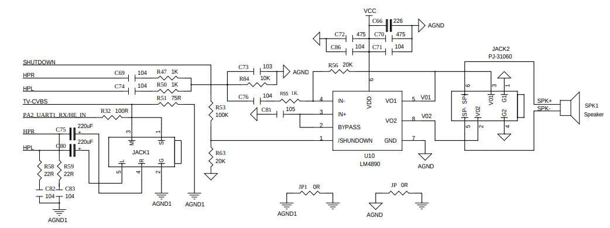
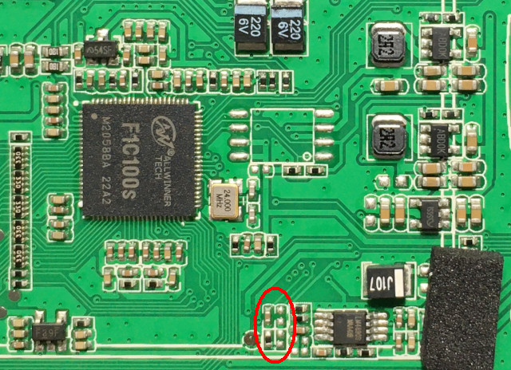
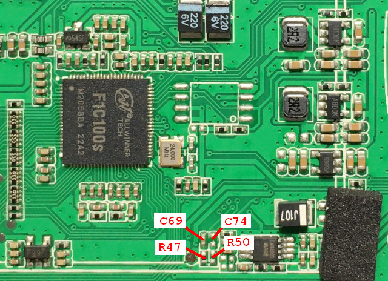
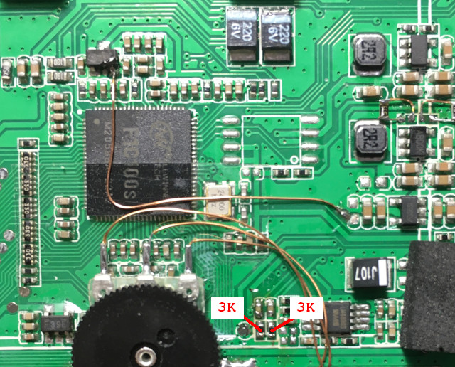

由於，有網友反應PocketGo並沒有立體聲輸出，因此，司徒做了一個測試
$ speaker-test -t wav -c 6 Time per period = 12.163623 0 - Front Left 4 - Center 1 - Front Right 3 - Rear Right 2 - Rear Left 5 - LFE
果然Fron Left沒有聲音輸出
司徒對了一下電路圖，發現左右聲道是有連接的



